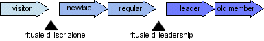

In che modo le comunità virtuali differiscono da quelle reali? Nella teoria sociologica classica per comunità si intendono tutte quelle relazioni che si basano sul rapporto madre-figlio, sul modello della comunità familiare; per società si intende, invece, l'insieme delle relazioni formali: il mercato, lo stato, le istituzioni,all'interno delle quali i rapporti non sono regolati da istanze di tipo affettivo-comunitario, ma da istanze di tipo formale e istituzionale.
Citando Hegel: "la società è la legge del giorno e la comunità è la legge della notte"; quest'ultima contiene in sé, dunque, una istanza più solidaristico-affettiva che formale. In realtà, questa distinzione classica tra comunità e società è stata criticata da alcuni teorici della filosofia contemporanea, come Jean Luc Nancy: egli sostiene che, in realtà, la distinzione tra comunità e società non è così netta ma, che anzi, non esiste; non si può dire che esista una comunità mitica, originaria, tutta buona e una società fredda, calcolistica e tutta cattiva; i due fenomeni si intersecano. Per quanto riguarda le comunità della rete, esse posseggono tutte e due le istanze: ci sono siti e comunità che sono di natura strettamente commerciale, oppure istituzionale, dove vi si partecipa in ragione di una funzione o di un ruolo. Ci sono, poi, comunità che si basano molto più su reti di affinità, su interessi comuni. Tra gli studiosi il dibattito sul concetto di comunità virtuale e sulla differenza tra comunità in senso tradizionale e comunità virtuale, si è sviluppato proprio su questo problema: quello della persistenza e della durata delle comunità virtuali;
Tomás Maldonado, sostiene che le comunità virtuali hanno delle caratteristiche di eccessiva fragilità; non reggono, per esempio il conflitto interno tra i membri, mentre nelle comunità reali, posizioni spesso diverse stanno dentro un unico contenitore. Altri sostengono che tale debolezza sia strutturale, sia intrinseca delle comunità virtuali, e sia un vantaggio, perché, cfr Turkle, questa debolezza, in realtà, permette di stabilire i vincoli comunitari non sulla base di rapporti di potere, ma sulla base di scelte libere basate su affinità di interessi; dunque, in questa prospettiva, tale debolezza si trasforma in un valore positivo. Sempre Maldonado si chiede:" Come si concilia l'idea di comunità virtuale, che si fonda sulla parzializzazione, con quella del villaggio globale, che mira invece all'universalizzazione? E in caso che il villaggio globale non sia altro, come qualcuno sostiene, che una comunità virtuale planetaria, come avviene il salto da un livello all'altro?" Negli ultimi tempi, sono stati molti i tentativi, da parte dei seguaci del ciberspazio, di definire la comunità virtuale, tuttavia tutti sono concordi nel definire il fatto che esse nascono a partire da interessi e gusti affini e quindi possano essere considerate comunità di simili. Di simili, non di identici. L'avvento delle reti telematiche ha reso possibile la comunicazione interattiva paritetica, da pari a pari (peer-to-peer), ma allo stesso tempo ha avuto effetti ambivalenti. Il "pari a pari",inteso in senso tecnico come un dispositivo che in un' architettura di rete opera allo stesso livello, ha assunto un senso non tecnico, come rapporto che si stabilisce tra utenti della rete culturalmente e socialmente pari.
Le comunità sono nate con la rete, spontaneamente attraverso meccanismi di aggregazione che spesso sono stati il risultato di determinate esigenze presenti già nella realtà. Alcune hanno vissuto e prosperato molte sono morte poco dopo il primo vagito. Tutte le comunità hanno un loro ciclo di vita e superata una certa soglia tendono progressivamente a spegnersi o a perdere la loro carica dinamica. Ci sono delle zone che temporaneamente aggregano delle esperienze e poi si dissolvono, dice Akim Bay, per fare posto ad altre. Ma una comunità, verrebbe da dire, nasce dalla condivisione di un interesse, un'esperienza, un obiettivo; in realtà l'unica cosa che viene condivisa è un'altra. Nelle comunità non si scambiano file ne' programmi in una comunità si condivide solo se' stessi. E' il cosiddetto self sharing. Questa definizione sembra particolarmente adatta a descrivere quello che avviene in quello che è diventato il luogo comunitario per eccellenza in rete: il chat.
Altra questione riguarda il linguaggio; é lecito quindi domandarsi da quale realtà linguistica traggano legittimità le "comunità in rete", in particolare quelle non specialistiche (che già posseggono un linguaggio in grado di stabilire confini per i profani). Parlarsi, scambiarsi informazioni e idee, presuppone un accordo preliminare su un vocabolario, su una sintassi, ma anche su una serie di referenti e di immagini del mondo.
http://www.mediamente.rai.it, Interviste su mediamente
http://www.fub.it/telema/, Quanto sono "vere" le comunità online?
http://www.provincia.venezia.it/medea/, Sherry Turkle, un'antropologa del cibersapzio
http://www.mediamente.rai.it, G. Gilder, editorialista e dirigente del Discovery Institute, spiega la sua visione sull'interattività uomo-computer
Il ciclo dell'aderente
Ami Jo Kim, ritiene che vi sono alcune transizioni che fanno parte di ogni comunità, anche reale, collegate ad esempio al comportamento sociale durante un trasloco in un
altro quartiere, anche online i nuovi arrivati si presentano con curiosità e domande inevase, ansiosi di essere accettati. I cittadini stabili si
occupano degli affari,indicono riunioni, si scambiano chiacchere e si si vedono con gli amici. I leader si fanno avanti per dare il benvenuto ai nuovi e per garantire
il corretto funzionamento dei vari sistemi. Infine quelli che vi risiedono da più tempo, gli anziani, raccontano storie, condividono conoscenze, trasmettono
la cultura locale. L'insieme di questi ruoli da forma al ciclo di vita dell'aderente, che a sua volta delinea gli stadi progressivi del coinvolgimento nella comunità.
Su Internet il tempo scorre assai rapidamente. Dinamiche sociali che richiedono mesi e anni per evolversi nel mondo fisico, sul Web
possono emergere nel giro di giorni, specialmente quando una comunità inizia suscitare interesse.
